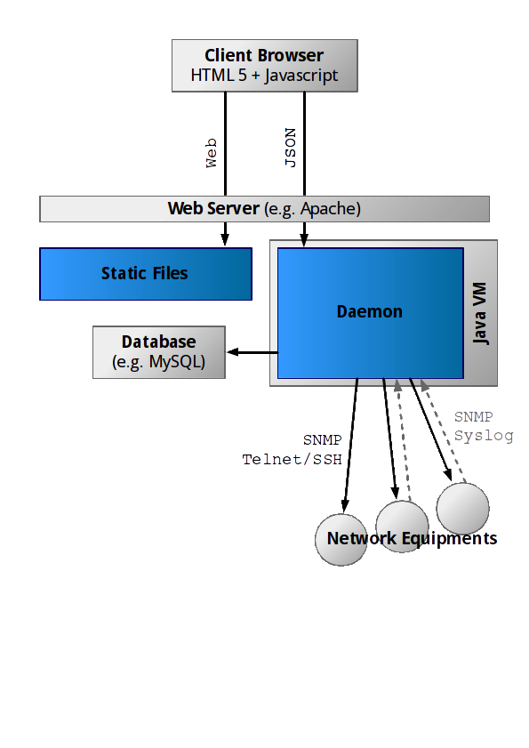

This assumes you are using a Debian-based Linux server, and want to deploy all parts of Netshot on this single server. You must have a Java JRE 1.7 installed, along with Apache and MySQL.
# adduser --system --home /usr/local/netshot --disabled-login --disabled-password netshot
# cp initd-netshot /etc/init.d/netshot
# cp ifup-netshot /etc/network/if-up.d/netshot
# cp etc-netshot.conf /etc/netshot.conf
# cp netshot.jar /usr/local/netshot
# cp -r www /usr/local/netshot
# cp apache-netshot /etc/apache2/sites-available/
# a2ensite netshot
# a2enmod proxy_http ssl
# make-ssl-cert /usr/share/ssl-cert/ssleay.cnf /usr/local/netshot/netshot.pem
# service apache2 restart
Edit /etc/apache2/sites-available/netshot if needed. The provided configuration declares two name-based VirtualHost's, assuming that the DNS name netshot points to the server. HTTP will redirect to HTTPS automatically.
# mysql < mysql-netshot.sql
If the current account can't access MySQL with sufficient privileges, you may want to add user and password information to the mysql command line.
# service netshot start
From your browser, access https://netshot. Enter the following credentials: username netshot, password netshot.
Go to Admin section, and create new users.
In the Admin section, add a domain.
In the Admin section, add credential sets. You should add at least a SNMPv1 or v2 community to be able to detect the devices, and a SSH or Telnet account to connect to the devices.
By now, you should be ready to use Netshot.
Netshot is made of a Java daemon (the backend) and a Web application (frontend).

Thus to run Netshot you need to start the Netshot daemon and to set up a Web server which will serve the Netshot static Web files and will forward the JSON requests to the Netshot daemon.
The Netshot daemon, the Web server and the database can be run on different machines (either physical or virtual).
The Netshot daemon runs as a standalone application and does the following:
The daemon is delivered as a Java application package, a .jar file. It can be executed on any OS running a Java 1.7 Virtual Machine, using a command line such as:
java -jar netshot.jar
When started, the daemon will look for a configuration file (a simple text) file, named netshot.conf, in the classpath, then in /etc.
A database engine must run to store the data. It can be any JDBC-compatible database (although it might be necessary to manually add the proper JDBC driver in the Netshot daemon classpath).
The database access must be configured in the netshot.conf file, using the netshot.db.driver_class, netshot.db.url, netshot.db.username and netshot.db.password parameters.
In order to configure a MySQL database for Netshot using the MySQL CLI (assuming the daemon and the database run on the same machine):
netshot.db.driver_class = com.mysql.jdbc.Driver
netshot.db.url = jdbc:mysql://localhost/netshot01
netshot.db.username = netshot
netshot.db.password = netshot
Netshot will create the structure (tables, keys) at the first connection.
Once Netshot has been started and has created the database structure, the following SQL statement would create a local administrator account, to be temporary used to access the application (username netshot, password netshot):
INSERT INTO user (level, local, username, hashed_password) VALUES (1000, 1, 'netshot', '7htrot2BNjUV/g57h/HJ/C1N0Fqrj+QQ');
When using Netshot, either local or RADIUS accounts can be used.
Local accounts can be added in the Admin section in Netshot.
To use RADIUS to authenticate users, the RADIUS servers must be added to the netshot.conf file. You may declare up to two servers (the second will be used if the first one is not available):
netshot.auth.radiusserver1.ip = [IP RADIUS Server #1]
netshot.auth.radiusserver1.port = [UDP port RADIUS Server #1]
netshot.auth.radiusserver1.key = [RADIUS key Server #1]
netshot.auth.radiusserver2.ip = [IP RADIUS Server #2]
netshot.auth.radiusserver2.port = [UDP port RADIUS Server #2]
netshot.auth.radiusserver2.key = [RADIUS key Server #2]
With this configuration, RADIUS will be used to authenticate users, but authorization will remain local, meaning the RADIUS-authenticated users will be given read-only permissions. To grant full privileges to the RADIUS users, you still need to declare them in the Admin section, as remote users (no password), but as administrators.
A Web server must be used to respond to HTTP requests sent by the user's Web browser. The HTML, CSS, JavaScript, image files must be statically served. The /rs requests must be redirected to the Netshot daemon.
To configure Apache as the Web server for Netshot, assuming the Netshot Web files are located in /usr/local/netshot/www, enable the proxy module and configure a VirtualHost similar to:
<VirtualHost *:80>
ServerName netshot
ServerAdmin dev@netshot.org
DocumentRoot /usr/local/netshot/www
<Directory /usr/local/netshot/www>
Options Indexes FollowSymLinks
AllowOverride None
Require all granted
Order Allow,Deny
Allow From 192.168.0.0/16
</Directory>
ErrorLog ${APACHE_LOG_DIR}/netshot-error.log
CustomLog ${APACHE_LOG_DIR}/netshot-access.log combine
ProxyPass /rs http://127.0.0.1:9996/netshot retry=0
ProxyPassReverse /rs http://127.0.0.1:9996/netshot
</VirtualHost>
It is highly recommended to rather configure a SSL VirtualHost, in order to protect the password exchange between the clien browser and the server.
The following ports must be opened for Netshot to work properly.
| Destination Port | Description and location | Source |
|---|---|---|
| TCP 80, 443 | HTTP/HTTPS ports on the Web server | From the client browser |
| TCP 9666 | REST port on the Daemon server | From the Web/proxy server |
| E.g. TCP 1433 | Database (e.g. MySQL) on the DB server | From the Netshot daemon |
| TCP 22, 23 | Telnet and SSH on the network devices | From the Netshot daemon |
| UDP 161 | SNMP on the network devices | From the Netshot daemon |
| UDP 69, 162, 514 | TFTP, SNMP trap, Syslog on the Daemon server | From the network devices |
On most Operating Systems, if the application is started by a standard user (which is the best option), it won't be able to listen on UDP/TCP ports like TFTP, SNMP Trap, Syslog (ports < 1024). Consequently, by default Netshot will listen on [port number + 1000] and will require an internal port redirection. The port number can be customized in the netshot.conf configuration file.
On Linux, this can be done using iptables.
For example, assuming Netshot listens for TFTP datagrams on UDP port 1069 (instead of 69), for SNMP traps on UDP port 1162 (instead of 162), for Syslog messages on port 1514 (instead of 514), the OS TCP/IP stack can rewrite the incoming packets with the following commands:
iptables -t nat -A PREROUTING -i eth0 -p udp --dport 69 -j REDIRECT --to-port 1069
iptables -t nat -A PREROUTING -i eth0 -p udp --dport 162 -j REDIRECT --to-port 1162
iptables -t nat -A PREROUTING -i eth0 -p udp --dport 514 -j REDIRECT --to-port 1514
Software Compliance assigns a compliance level (Gold, Silver or Bronze) to each device. You define rules which basically say "give this level (Gold, Silver or Bronze) to any device of type/family X and matching software version Y". The rules are stricly ordered. When Netshot checks a device, it will take the rules in order and gives the level indicated by the first matching rule. If no rule is hit for the given device, the Software Compliance level will be Unknown.
To define Software Compliance rules, go to Compliance (top menu), then Software (left list).
Software Compliance rules are automatically evaluated after a successful Snapshot task. They can also be manually triggered by creating a new task.
To see the current Compliance status of your devices, go to Reports. You can also see it for each device in the Compliance tab in the Devices section.
With Configuration Compliance, you may define rules which will check the configuration and other paremeters of the devices.
The policies are groups of rules. They have a name and applies to a group of devices.
The rules do the work: they check the device and return a result of: Compliant, Non compliant, Not applicable. For now, only JavaScript rules can be defined in Netshot.
Each time a Snapshot task successfully runs, a Configuration Compliance Check Task will be started against the device; it will look for the relevant policies (i.e. policies applied to groups the device is part of) and will run the subsequent rules. The compliance status of a device can also be manually refreshed by scheduling a task.
The compliance status of a device can be seen in the Compliance page, in the Devices section. An overview is given by the relevant report.
To add a policy, go to the Compliance section, and click on Create policy... in the top toolbar.
A JavaScript rule is a piece of JavaScript code. This code will be executed by Netshot. It can access properties of the devices, and based on that will return a compliance level.
The code must contain a check() function. This function is the one that will be run and will have to return one of these constants:
Netshot-specific data and tools can be accessed through the Netshot object.
A minimal rule that all devices would conform with would be:
function check() {
return CONFORMING;
}
You can also include a comment in the result, this comment would appear in the device compliance status:
function check() {
return {
result: NONCORMING,
comment: "Missing some part of the standard configuration"
}
}
The following rule would check the device name with a regular expression. If the name matches the expression, the device is compliant:
function check() {
var name = Netshot.get('name');
if (name.match(/^ZR[0-9][0-9][0-9][0-9][0-9]$/)) {
return CONFORMING;
}
return {
result: NONCONFORMING,
comment: "Invalid name"
}
}
The following rule will check that the no ip redirects command is applied to each interface configuration block (Cisco IOS context).
function findBlocks(pattern, text) {
var r = new RegExp("(?:^|\\n)(\\s*)(" + pattern.source + ")(((?:\\r?)\\n\\1\\s.*)*)", "g");
var blocks = [];
while ((block = r.exec(text)) !== null) {
blocks.push(block);
}
return blocks;
}
function check() {
var config = Netshot.get('config');
var interfaceConfigs = findBlocks(/interface .*/, config);
for (var i in interfaceConfigs) {
if (!interfaceConfigs[i][3].match(/^ no ip redirects/m)) {
return NONCONFORMING;
}
}
return CONFORMING;
}